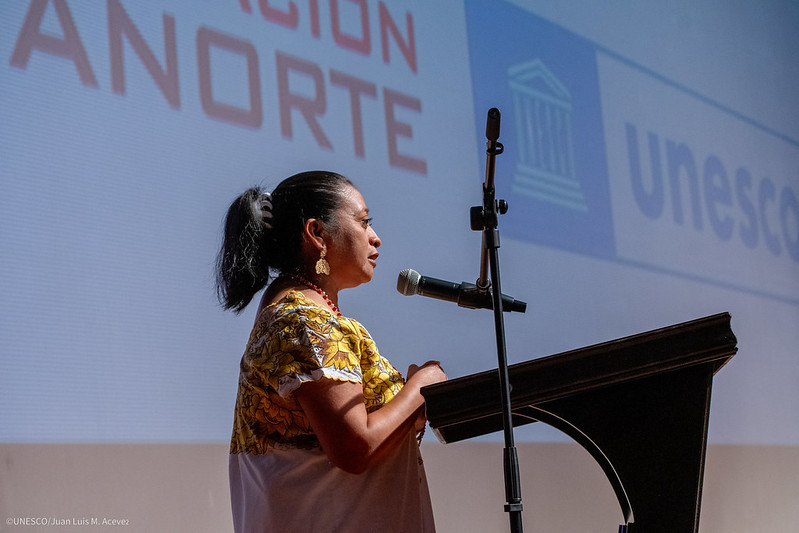

Cándida Jiménez Bojórquez
Cándida Jiménez Bojórquez, de 46 años, es una bordadora con una trayectoria notable y representante del municipio de Maní ante el Consejo Estatal de Bordadoras. Su incursión en el mundo del bordado comenzó a los 9 años, cuando su abuela le enseñó las técnicas de bordado a mano. A los 10 años, amplió sus habilidades al aprender el bordado con máquina de pedal, lo que le permitió desarrollar una técnica más versátil y eficiente.
Especializada en el bordado a máquina sobre tul, Cándida ha dedicado 37 años a perfeccionar su oficio. Su experiencia y destreza la han llevado a ser capacitadora, impartiendo talleres y cursos para transmitir sus conocimientos a nuevas generaciones de bordadoras. A lo largo de su carrera, ha sido galardonada con numerosos premios que destacan su habilidad y contribución al arte del bordado.
